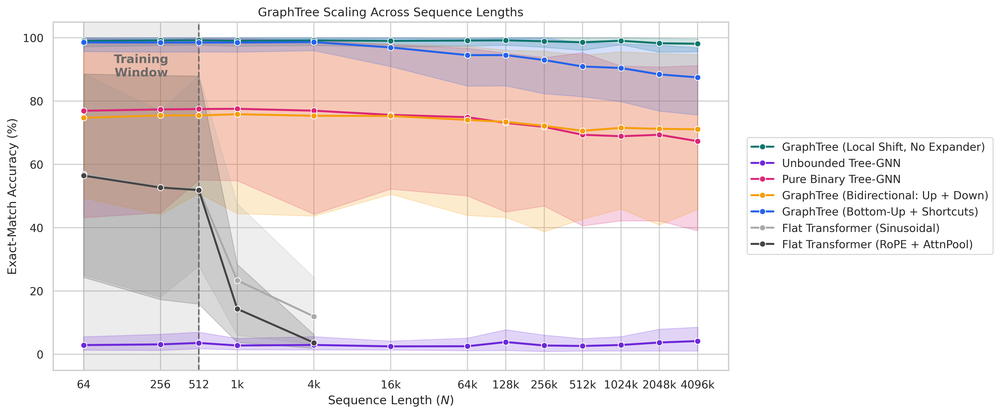

【P1】原始任务是代码、日志与多跳检索，层级图用有界度连接替代全连接注意力，为百万长度提供结构候选。只有长序列方面的作者报告，不含真实 Delta t 与多采样率证据，因此作为机制候选，不认定已解决统一骨干。
研究背景
由原简报的核心问题、选取理由和相关性整理，不替代原文背景综述。
高频诊断长序列与低频观测需要在同一上下文中交互，全连接注意力的计算和激活开销会随长度快速增加。分层汇聚和稀疏捷径可以缩短远距离传播路径，但压缩过程中能否保留短暂弱事件，是从符号检索迁移到连续科学时序的关键。
从本日报的选取理由看，【P1】原始任务是代码、日志与多跳检索，层级图用有界度连接替代全连接注意力，为百万长度提供结构候选。只有长序列方面的作者报告，不含真实 Delta t 与多采样率证据，因此作为机制候选，不认定已解决统一骨干。
核心问题
如何在近线性资源下传播远距离信息，并避免汇聚抹平瞬态信号。P1 还需要额外处理真实时间间隔、异步通道和采样率变化，这些要求不在原文已证明范围内。
对当前主题的关键意义在于：【P1】原始应用领域是代码、日志与检索。可迁移模块是有界度层级汇聚、跨层捷径与门控广播，对应长高频通道和低频观测的全局交互。预期降低全局注意力的计算与显存增长，但图构建和多轮传播可能增加延迟。主要风险是树归约丢失短暂弱异常、随机边不符合真实时间因果性。最小验证实验是在现有骨干加入带 Delta t 和通道标识的层级图，比较 1 万至 100 万长度下误差、短事件召回、采样率变化、峰值显存与吞吐。
方法与关键创新

Figure 3: Average performance on all tests in zero-shot extrapolation of all architectures.
Fig. 10: Qualitative comparison of OC-SORT and our HSG on two hard eTram sequences under RVT detections. Shown case (a) represents objects with partial occlusions, and (b) represen...
Fig. 2: Overview of our FastBEVFusion. Multi-view image data is encoded and projected into an image BEV space using a uniform depth distribution to ensure low latency (color-coded ...
Fig. 2: Overview of the 3D-SceneQ framework, which integrates multi-view 2D images, 3D point clouds, and textual instructions to generate informed responses. QGAP refers to the Que...
Figure 1: Overview of VideoLVR. (a) A teacher MLLM synthesizes evidence-grounded reasoning trajectories through rejection sampling and trajectory polishing. (b) Visual tokens from ...
![Fig. 2: Overview of our FastBEVFusion. Multi-view image data is encoded and projected into an image BEV space using a uniform depth distribution to ensure low latency (color-coded in shades of green for different views). During training, an additional 2D object detection head is added. In parallel, the LiDAR point cloud is encoded into a LiDAR BEV space. The semi-aligned BEV spaces are then fused in our light-weight fusion module using on a single attention block exploiting the semi-aligned nature of the BEV spaces (see Fig. 3 for details). Based on the resulting fused BEV space, a detection head generates multi-modal 3D object detections.](../assets/figures/b4fd27843eb04558.png)
![Figure 1: Overview of VideoLVR. (a) A teacher MLLM synthesizes evidence-grounded reasoning trajectories through rejection sampling and trajectory polishing. (b) Visual tokens from regions supporting the same reasoning step are grouped and ordered by timestamp to form latent targets. VideoLVR jointly trains text generation with next-token prediction and latent visual evidence generation with visual token prediction over the input-video visual vocabulary. (c) At inference with the supervised model, each decoder hidden state is projected into a latent visual state and fed back as the input for the next decoding step, enabling autoregressive reasoning over latent visual evidence without additional visual observations.](../assets/figures/657546f3cd24b937.png)